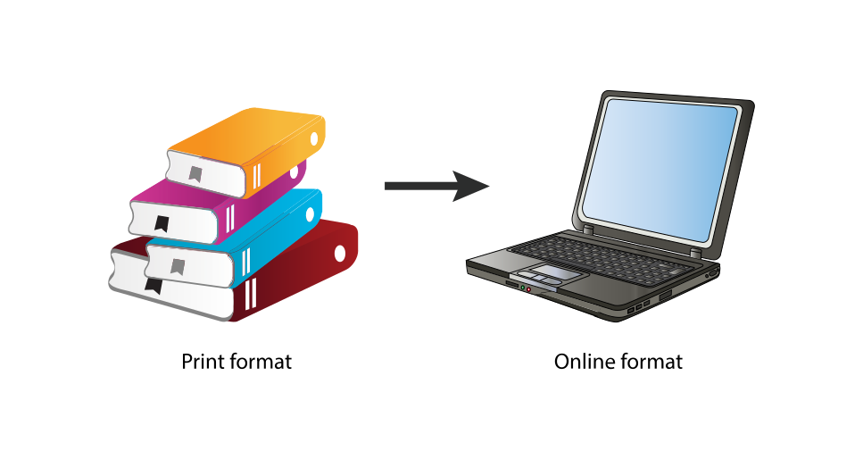
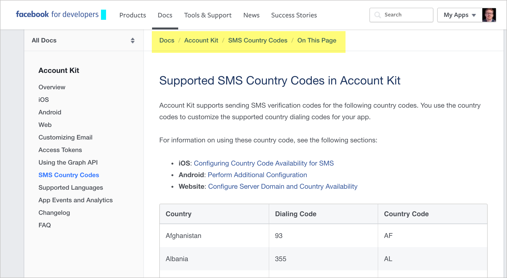

User-centered design principles for organizing documentation
Created by Tom Johnson / @tomjohnson
idratherbewriting.com
February 14, 2017
About me

- Live in Silicon Valley
- Work at Amazon Lab 126
- Focus on developer doc
- Like building sites with Jekyll
- Creative writing background
- Family with 4 daughters
- Love to play basketball
Keyboard Shortcuts
| Next slide | Space bar |
| Full screen | F |
| Index | Esc |
Note: Slides can also move down, such as when I'm exploring a design principle in depth.
If so, the arrow on the lower-right indicates the vertical direction. Test it out now.
Observations in Usability Labs

Universal Principles of Design
Design Principles for Organizing Content
- Modularity
- Hierarchy
- Five Hat Racks
- Progressive Disclosure
- Entry point
- Desire line
- Wayfinding
- Immersion
- Consistency
- Forgiveness
Modularity
Break up content into independent topics that can be viewed, understood, and updated independent of the whole. A topic or chunk should not be so interconnected with the whole that it cannot stand on its own.
Users read non-sequentially
You can just read the sections about the tasks you want to do.— John Carroll, The Nurnberg Funnel
Modularity sounds great. Where do things go wrong?
1. Writers assume building blocks equal presentation

2. Writers auto-burst print books based on h2
"Frankenbooks": Modularity gone wrong
A Frankenbook is organized neither for linear reading, nor for random access. No matter where you land in it, you are in the middle of a maze with buttons to move up, down, or sideways, but no means of finding the end of any thread of narrative, great or small. Every page is page 297 and none of them answer your question .... .— Mark Baker, Every Page Is Page One
Treat "Every Page Is Page One"
Create self-contained topics

Provide context before

Provide context after

Modularity best practices
- Make topics meaningful enough to stand on their own
- Don't be afraid to make long topics
- Assume users might be starting at that page
- Link to any necessary context (prereqs, assumptions) at the beginning of the topic
Hierarchy
A hierarchical outline of the content (with parent and child items organized in trees) helps users both understand and visualize complex information.
Hierarchies that are too complex, or which hide parent-child displays, fail to communicate. Find a balance that allows users to take in the hierarchy at a glance in a meaningful way.
Hierarchy provides meaning
Navigation provides a narrative for people to follow on the web.
— James Kalbach, Designing Web Navigation: Optimizing the User Experience
Google hierarchy example

Tip: Shorten titles in your navigation
| "Getting Started Building Widgets for System Z" |
→ | "Build widgets" |
| "About Managing Language Settings in Product Z" |
→ | "Manage language settings" |
| "Configuring the Gizmo Settings for Development Environments" |
→ | "Set up developer environment" |
Sentry hierarchy example

Hierarchy best practices
- Limit navigation (hierarchy) to 3 levels, placed on left
- Allow users to see the full navigation menu at a glance
- Break up massive navigation into multiple menus
- Provide a way to navigate from one nav menu to another
- Put page-level navigation on the page, preferably on right
Five Hat Racks
You can organize content in 5 ways:
- Alphabet
- Time
- Location
- Continuum (degree)
- Category (likeness)
Generally, doc is grouped by category more than location (except with context-sensitive help).
Five Hat Racks Example


Group by category, not location

Faceted navigation
Faceted navigation is arguably the most significant search innovation of the past decade.
— Peter Morville, Search Patterns
Tags are practical facets
With tags, your files and photos can be in two, three, or more “places” at once.— Gene Smith, People-Powered Metadata for the Social Web
Progressive Disclosure
Layer information so that you don't present everything to the user at once. Make some information available only at secondary or tertiary levels of navigation.
See also: Layering, Constraint
Strip tease your information
Progressive disclosure is the best tool so far: show people the basics first, and once they understand that, allow them to get to the expert features. But don't show everything all at once or you will only confuse people and they will waste endless time messing with features that they don't need yet.— Jakob Nielsen, Interaction Design
Example of progressive information disclosure

An example of progressive disclosure in the UI

Different sidebars for different layers

Performance Load
The larger, more complex the system, the greater the strain on the user. The greater the strain, the lower the user's success. In many cases, documentation that is too massive deflates the user from even trying at all.
See also: Cost-Benefit, Hierarchy of Needs, Control
Users resist long documentation

When it becomes worth it
"An information retrieval system will tend not to be used whenever it is more painful and troublesome for a customer to have information than for him not to have it."
Mooer's Law
Quick reference guides
Instead of eliminating potentially useful info, provide quick reference guides that help users get oriented quickly with minimal cognitive load and low cost.
What are quick reference guides
- Differs from getting started, but both are welcome
- Main tasks described in compressed, poetry-like form
- Like cliff notes or cheat sheet
- Shows shape of help content
- Especially helpful for lists of functions, classes, methods
Quick reference guides example

Strategy: Create "getting started" guides

Complex process layouts


Quick reference guide layouts

Give the big picture

Entry Point
The entry point to your system should orient users and allow them to easily get started. Avoid barriers that block, confuse, or otherwise hinder the user's progress to their goal.
Use homepage as routing page

Example Entry Point with Azure Docs

Desire Line
Look at common paths users take through information, and then make those paths more prominent and standard.
Sample desire line

Determine lines through metrics
80/20 Rule

Put top 10 articles on entry point
If users consistently go to the same 10 topics, put those topics front and center in your help system to facilitate a more standard path to those topics.
Wayfinding
Provide navigational signposts — such as breadcrumbs or other workflow maps — to help orient users as to where they are in a larger system. Don't assume that the user navigated to the current page following the path you intended.
Example breadcrumbs from Facebook
Immersion
Users desire to be immersed in the application or system they're using rather than leaving that system to consult a separate, external system for help. Allow users to stay immersed in the application context by bringing help into the application.
See also: Fitt's Law
Users don't want to use help
The conclusion of most studies about how people use help is that people don't use help.-- Mike Hughes, I'd Rather Be Writing podcast
Audio excerpt

Bring help into the UI

Fitt's Law
The further a user must travel with their cursor, the less accuracy the user will have in reaching the target object.
— Travis Lowdermilk, User-centered Design
Much of the UI is text

This is the same UI without text
WordPress UI without text
Youtube UI without text
Forgiveness
Taking risks, experimenting, and exploring systems on their own helps users learn. When users make errors during these activities, help guide them back on the right path.
Sample help in console with Jekyll includes

Find all error messages in your system

Test everything yourself

Summary
- Modularity
- Hierarchy
- Five Hat Racks
- Progressive Disclosure
- Entry Point
- Desire Line
- Wayfinding
- Immersion
- Consistency
- Forgiveness
Questions?
Thanks!

Tom Johnson
— idratherbewriting.com
— @tomjohnson
— tomjoht@gmail.com